动态规划是入门第二周的主题。突然就发现老师挂羊头卖狗肉，教科书其实是按照 Algorithm Design 讲的，然后就舒服了，，，
动态规划的主要方法
分段最小二乘
最小二乘一般用于线性函数拟合问题，本身并无难点。在本题中难点在于确定多少根线条可以获得比较好的拟合结果.
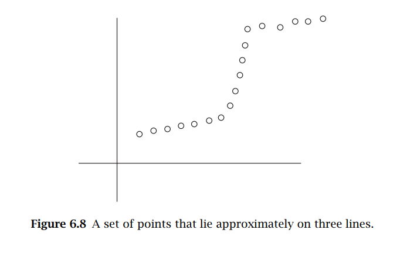
根据肉眼观察，肯定是3段线条能够比较好的拟合上图的散点。但是问题在于，换个图程序就不知道了，难道需要每次都手动告诉程序要分多少段吗？肯定没人愿意。
于是我们对于本题的需求在于，想要找到合适的点，分合适的段，得到合适的结果。于是在本题中较好的方法是：加入另一个变量，对于每一个segment引入惩罚。
$$\operatorname{OPT}(n)=e_{i, n}+C+\operatorname{OPT}(i-1)$$
对于点 1..n, e表示每条线段拟合过后出现的error，而在本算法中新引入的是C，因此每多一个segment 就多一个惩罚，以此得到最合适的分段值。 OPT（i）表示从1到i分段的penalty的最优解。 本式子的意义在于： 对每一段函数，都会引入一个C， 加上这一段之前的 0 - i-1 这么一段的最优解。 以此公式进行递归就可以求解。
$$OPT (j)=\min_{1 \leq i \leq j} \left(e_{i, j}+C+ OPT (i-1)\right)$$
于是该问题的algorithm 如下图所示：
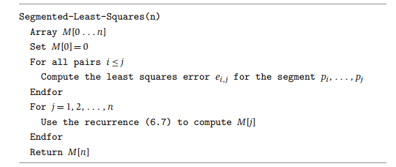
对于该算法的理解： 首先初始化该算法，并且设置M[0]=0（递归的终止点）。算法首先接受到的是n，此为所有点的坐标。
其次， 依次对所有partition p1，p2,,,,pn 计算所有的拟合误差 error 值，(计算了一次后面就不用了)
然后根据分的段数，依次计算OPT(j)，得到最小值。我的理解是这样的：
j=1 时， 因为 i-1 只能为0， 所以其结果就是 只有一个点的OPT值。（其实没啥意义）
j=2 时， i 可以等于1 或者2. 当i = 1 时， 就是在第一个点上分段，i=2， 就是在第二个点上分。当i=2 是，p1 这个点就被送到了OPT(i-1)这个式子中去。
j=3时， i=1,2,3. i=1时 就是分一段。当i=2 时，讲i=1 丢给OPT(i-1)， i = 3时将1,2 丢给OPT(i-1).
由此当 j = n 时，假设point 1.2.3….i…j…n
将n 送入式子中，会依次递归，比如在j出分段，将i 到 j-1 丢入OPT(i-1)中。 然后到i处分段时，可以依次类推。然而要注意的是，OPT(i-1)的值都已经存入了M[j]中，所以在搜索I 的时候，不需要每次都从头开始计算，其操作复杂度应该是O(1)的，这是动态规划的关键。
当然直接这样理解可能还是有问题，在这挖个坑，，以后再回来补充代码。
得到了最优解，但是其实我们还需要traceback 才能知道应该在哪分段，(好烦啊)
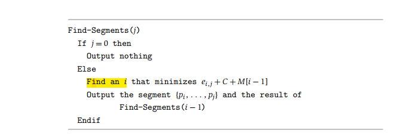
根据以上算法，其实可能并不复杂。就是在之前提到过的式子：
$$OPT (j)=\min_{1 \leq i \leq j} \left(e_{i, j}+C+ OPT (i-1)\right)$$
中，将i打印出来。没啥毛病。
背包问题 （双变量）
背包问题与之前的不同在于其添加了一个变量。在之前的最小二乘中，每个点和每个点是想同的，而问题的目标仅仅在于使总penalty最小，其唯一输入是点坐标，而所求的结果是根据坐标点。 而背包问题中，有两个变量， 第一是输入是物品1…i，第二是背包容量w。在之前问题中，选择分多少段对于问题整体而言没有任何除了penalty之外的影响，因此只需要考虑分解成的小问题， 对于i 个物品该怎么分。
所以对本问题， 对于第i个物品，如果将其放入背包，则需要将背包中负重容量也相应减去$w_{i}$
$$\operatorname{opt}(i, w)=\max \left(\operatorname{opt}(i-1, w), w_{i}+\operatorname{opt}\left(i-1, w-w_{i}\right)\right)$$
接下来的图是一个example， 这个图一共有3个物品， 总容量为6
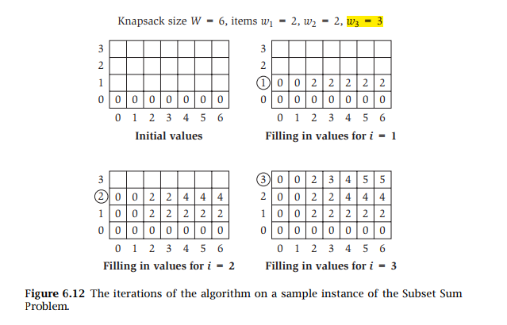
对于同样的递推公式，需要一个二维数组来进行记录。 首先考虑什么都不装的情况，那自然都是0， 然后是考虑w1这个物品，由于其重量为2，因此当背包负荷大于2时，就可以将该物品装入。
同理，依次考虑有i件物品， 并且背包容量从 0 到 w 时的情况，依次填入表格。最后的一个格子就是所需要的。
算法复杂度是O(n*w), n 是物品个数，而w 是背包容量。
Edited Distance
这题在老师ppt上。 说实话感觉老师精简了难度。
这是用最少的操作数将一个字符串转化成另一个字符串。 而可用的字符串有以下三种：
- delete $S_{i}$
- Insert $t_{j}$
- substitution
因此其状态转换方程式如下
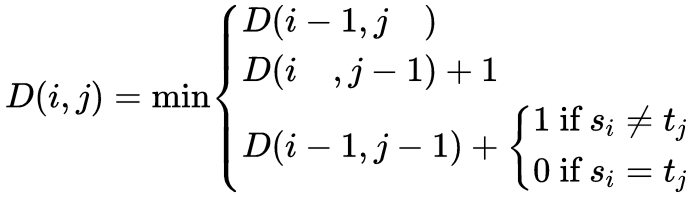
以一下案例来理解：
SUNDAY 和 Saturday 到底需要几个呢？
思路还是跟之前一样，从base case 单个字母开始。 （初始化就跳过了）
对于接下来的每一个字母增加， 都依次根据D{i-1, j}, D{i,j-1}, D{i-1,j-1} 三种情况来计算其最短编辑距离。
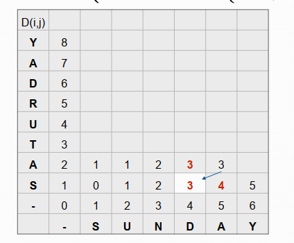
如图， 因为其最后一个3 根据第一第二公式来算的话，它应该是4 和5， 而根据第三个公式应该是3， 因为 A 和 A 是相同的。
Sequence Alignment
序列对比 是 Generalized form of Edited distance.
对于两个序列 X = {x1,x2, x3,x4….xn}和 Y = {y1,y2,y3,,,,yn},其目标是：
- Maximizes the similarity by giving weights to two types of difference
- Gap: insert or deletes
- Mismatch - subsitute
- Def. An alignment M is a set of ordered pairs $x_{i}-y_{j}$ such that each item occurs in at most one pair and no crossings.
关于Crossing 的解释：
如果两个字符串没有“crossing”:$\text { if }(i, j),\left(i^{\prime}, j^{\prime}\right) \in M \text { and } i<i^{\prime}, \text { then } j<j^{\prime}$
for example：
1 | stop- |
那么 alignment M 就是 {(2,1),(3,2),(4,3)}， 其中i < i’, j < j’.
最终优化的函数是:
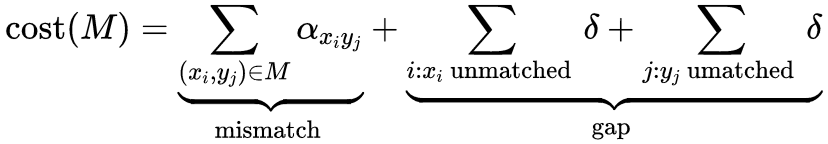
直接上图
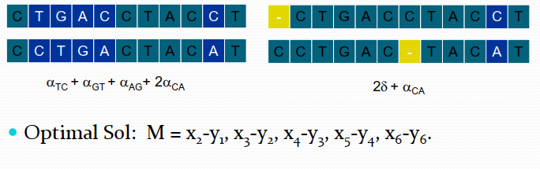
可以看到，虽然有很多种pair ，但是我们需要cost 最小的那种.于是OPT递推方程是:
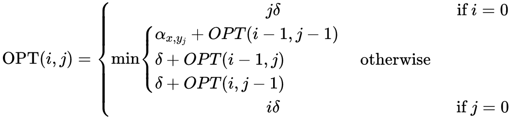
这个公式min()项跟之前的有点类似，都是根据之前的结果算出当前M[i,j]
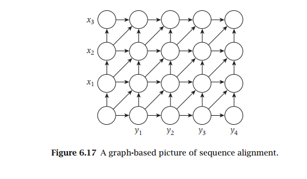 上图比较形象的解释了 edited distance 和 本题中的算法：从左到下方三个点中到达计算点的最小距离。Sequence Alignment via Divide and Conquer
人呐总是不知足，吃着碗里的望着锅里的。 给了个算法还不够，嫌弃人家占用资源，，，接下来应该是几种优化情况了。
- , the recurrence only needs information from the current column of A and the previous column of A. Thus we will “collapse” the array A to an m × 2 array
大意就是，只需要存两个column 的值，就可以得到最后的结果：
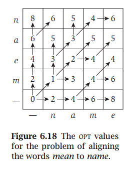
其原理应该也还是比较容易看明白的。实际上存的是当前值和前一个column的值，所以占用空间被简化了。当然，这样的话我们就找不到配对的具体情况了。
但是，要是真不能知道结果，这个方法也就没必要存在了。
A Backward Formulation of the Dynamic Program
这个名字有点意思，让我一下就想起了卷积神经网络的方向传输，，，，
Ok， 其实是把整个反过来，然后取中间一点，i,j 前半部分叫p(i,j), 后半部分叫f(i,j).
devide and conquer 在这是从两边开始分别用的。
从（0，0）和{m,n}两个点分别开始靠拢，然后就得到中间那一条的路径长短，然后加起来比较下就好了。
Divide: find index q that minimize f(q,n/2)+g(1,n/2) use dp
- align $X_q$ and $Y_(n/2)$
Conquer: recursively compute optimal alignment in each piece.